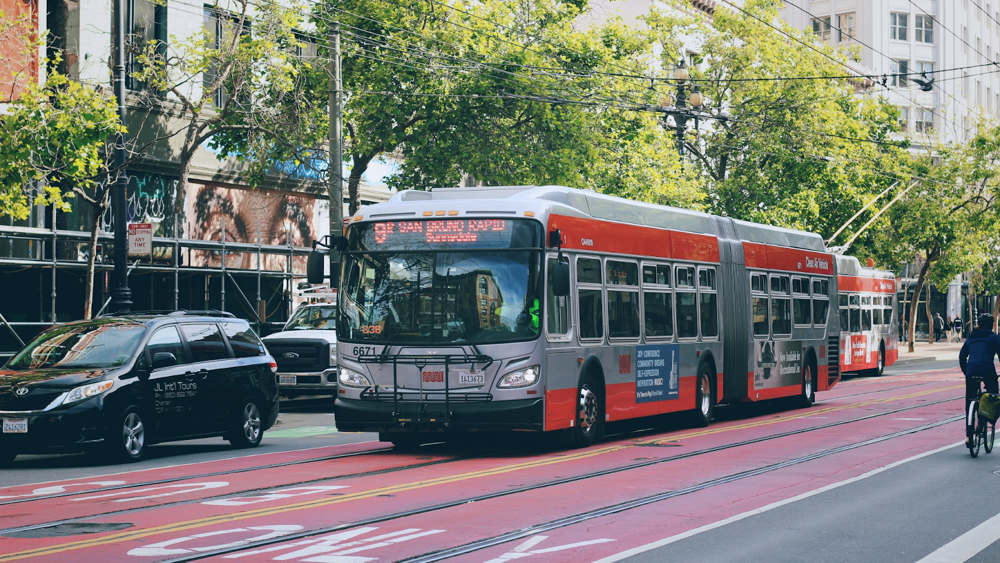

Living in San Francisco for 5 years, we didn’t have a car, so I traveled everywhere by bus. I was fortunate that the city allowed me to travel to anywhere I want within it with public transportation. With google maps equipped and a couple of bus transfers, I could make it to my destination within 2 hours. The added public transportation time has definitely allowed me to get to know the city better: from getting off at the wrong stops, going opposite directions completely, and watching the scenery pass by on a bus. The experience of the travel, however, could be improved. San Francisco public transportation was infuriating at first to me who was used to the strict metro times of Tokyo or Vancouver.
The bus app times were only accurate sometimes. Sometimes a bus might say they are coming in 10min but in reality its 20min, etc, etc. It is definitely getting better over time but because bus times are never consistent, you can not plan a trip somewhere efficiently. For example, you estimate the bus should come within 10 minutes, but in reality, no buses show up for 30 minutes until two buses right beside each other show up and you are late.
“Ghost Buses” is a term my brother and I coined: whenever a bus would say it's coming within a specified time, and when the time is 0, it switches back up to 20minutes, juking the people who were waiting for the bus. The bus on the bus time app treats the bus as if it came, but in reality, the ghost of a bus passed by.

Buses to school sometimes became so crowded, that they would simply skip over my stop. Then I would be late for class as I have to wait for the next bus.
Public transportation (metro, Bart, bus, subway) was dirty. The subways would smell weird and buses would have dirty seats.
Riding a bike felt dangerous as there is less of a bike lane and a lot of cars.
Bart Fares are 10$ to get from San Francisco to Berkeley. While each Muni trip costs around 2.5$. Bart fares are halved and Muni fares are free if you’re a student.
Although I just listed my complaints about the San Francisco public transportation system, I am grateful that it is as developed as it is now. Bus time prediction apps are getting better although Muni times are not consistent and probably will never be because of the nature of San Francisco traffic. I believe how you travel around a city, shapes your relationship with the city.